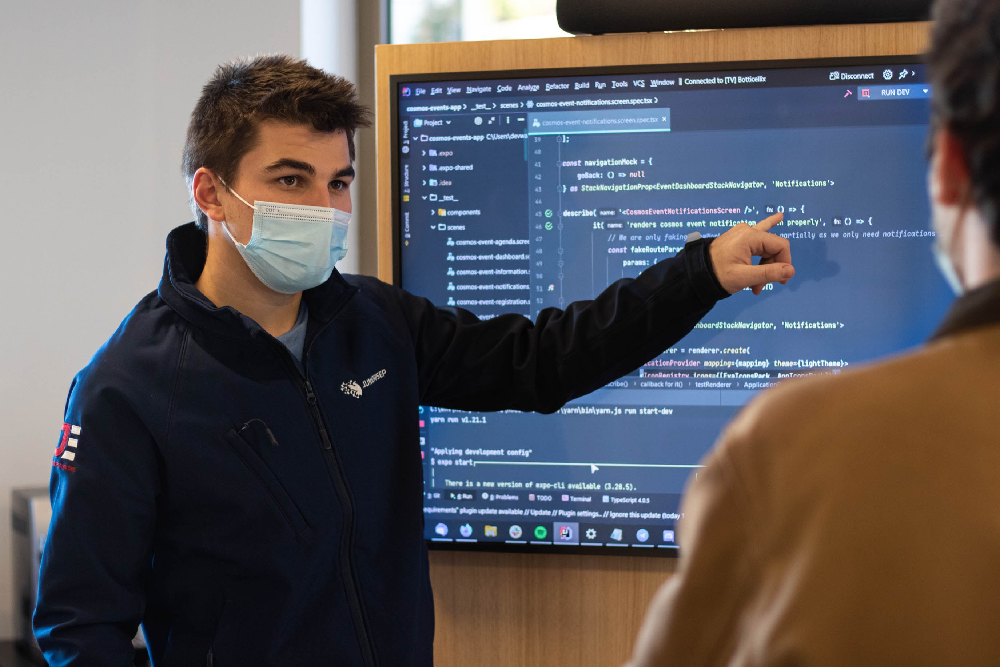

My Work

NJIT Data Structures & algorithms TA
As a Teaching Assistant (TA) for two Data Structures and Algorithms sections at NJIT, I assumed a diverse role that exceeded conventional expectations. Serving as both a grader and a mentor, my main objective was to create an atmosphere in which students not only navigated the academic demands of the course but also conquered their individual challenges.

Middle School Stem Tutor
Collaborated with students to complete homework assignments, identify lagging skills, and correct weaknesses. Motivated students towards learning and studying to build self-confidence and reduce fear of failure. Supported students with helpful study habits and exam strategies.